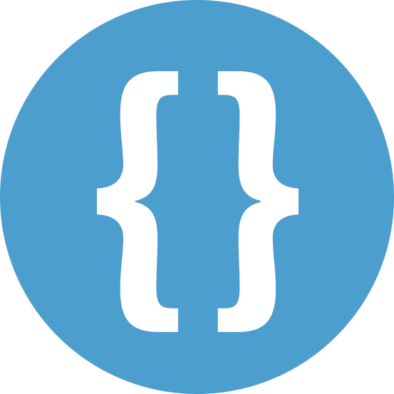

<nav class="footer-nav">
    <section class="footer-general">
        <a href="../index.html" class="link-logo logo-footer">
            Damián~
        </a>
        <ul class="footer-menu">
            <li class="footer-items"><a href="../index.html" class="footer-link">Inicio</a></li>
            <li class="footer-items"><a href="../about.html" class="footer-link">Sobre Mí</a></li>
            <li class="footer-items"><a href="../projects.html" class="footer-link">Proyectos</a></li>
            <li class="footer-items"><a href="../contact.html" class="footer-link">Contacto</a></li>
        </ul>
        <div class="social-media-logos">
            <a href="https://www.linkedin.com/in/edamiantripodi/" target="_BLANK" class="social-media">
                
            </a>
            <a href="https://github.com/xKensho47" target="_BLANK" class="social-media">
                
            </a>
        </div>
    </section>
    <div class="portfolio-copyright">
        &copy; 2024 Damián~ | All Rights Reserved
    </div>
</nav>